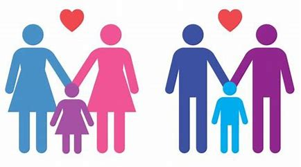

O adotante precisa ter, no mínimo, 18 anos de idade.
A pessoa que deseja adotar deve ser, pelo menos, 16 anos mais velha que o adotado.
Estado CivilPessoas solteiras, casadas ou que vivam em união estável podem adotar.
Casais, sejam eles heterossexuais ou do mesmo sexo, podem adotar juntos, desde que o relacionamento esteja formalizado. Para casais em união estável, o vínculo deve ser comprovado.
 Capacidade Psicológica e FinanceiraNão é exigida uma renda mínima, mas o adotante deve demonstrar que tem condições de sustentar e educar o adotado.
O processo de habilitação inclui uma avaliação psicossocial, na qual são analisados o equilíbrio emocional e a capacidade de fornecer um ambiente estável.
Estrangeiros e Brasileiros Residentes no ExteriorEstrangeiros e brasileiros que residem fora do Brasil também podem adotar, mas o processo tende a ser mais longo e exige avaliação adicional para garantir a segurança da criança em outro país.
Pessoas que Já Têm Filhos Biológicos ou AdotivosNão há impedimento para que uma pessoa ou casal que já tenha filhos biológicos ou adotivos possa adotar novamente, desde que comprove capacidade de receber e cuidar da nova criança ou adolescente.